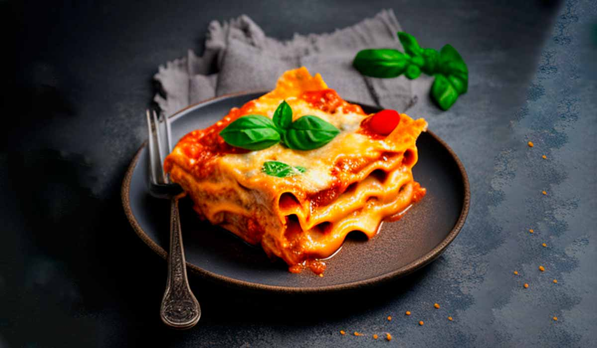

Lasagna

Descrição
The family's favorite pasta in versions everyone will love
This democratic baked pasta with layers of sauce and cheese is something
that is a hit even with the most demanding palates.
Igredients
- 2 tablespoons of oil
- 1 chopped medium onion (150g)
- 400g ground beef
- 2 diced medium tomatoes (300g)
- 2 tomato pulp boxes (1kg)
- half a cup of water (1ooml)
- 2 sazon seasoning sachets
- half a teaspoon of salt
- 1 oven-dried lasagna noodles (250g)
- 200g sliced ham
- 300g sliced mozzarella
Step by step
- In a large pan, add the oil and lead to high fire to warm up. join
onion and sauté for 2 minutes. add the meat, little by little, and
fry for 10 minutes, or until the liquid dries up. Add the tomato and
sauté for 3 minutes, or until it begins to undo.
- Add the tomato pulp, water, Seasoning SAZÓN and salt, and let it cook
over low heat, with the pan half-covered, for 5 minutes, or until
slightly thickened. Remove from fire.
- In a large rectangular refractory (23 x 35 cm), make layers with the
sauce, pasta, ham and mozzarella, alternating and repeating until you
finish with the sauce and the mozzarella.
- Cover with aluminum foil and place in a medium oven (180 degrees),
preheated, for 20 minutes, or until the dough is soft. Remove the
aluminum foil and return to the oven for another 5 minutes, or until
the cheese is browned.
- Remove from the oven and serve immediately.